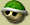

まず、ゲームモードは４種類。『グランプリ』『タイムアタック』『VS』『バトル』で、みんな違った楽しみ方があります。編集長はまず『グランプリ』にトライ。順を追って、３つのコースに挑戦します。カップによって難易度が違うので、初心者さんは『キノコカップ』から始めるとグー。それぞれのクラスに個性的なコースがいっぱい用意されているので、眺めているだけでも楽しいはず。良い成績を残せば、それだけ嬉しい『お楽しみ』が出現するというので、頑張りがいもた〜くさん。
キャラクター選択では、当然のことながらキャラを２人選択します。キャラはそれぞれ体重があって、前後キャラの重さの組み合わせによって、乗れるカートが決まってきます。重量級のカート、軽量級のカート、中量級のカート、それぞれ加速や最高速度などの特徴を見分けて、自分のやりやすい組み合わせを見つけるのがポイント。
さて『マリオカート』シリーズといえば、やっぱりアイテムの存在があります。コース上に置かれているアイテムボックスを通過すると、ランダムで様々なアイテムをゲットできるのです。たとえば…。
|
【バナナ】
コース上に置いて、それを踏んだカートはクルクルとスピン。 |
|  |
【ミドリこうら】
投げることができ、当たったカートは転倒。 |
|
【にせアイテムボックス】
コース上に置くことができる、アイテムボックスそっくりな騙しアイテム。 |
こういった一般的なアイテムのほかにも、各キャラクターごとに"スペシャルアイテム"の存在があり、それを使えば更にレース展開を有利に進めることができるはず。やっぱりアイテムを使った駆け引きが、レースの行方を左右すると言えるでしょう。編集長は、何度も何度も"にせアイテムボックス"に騙されました…悲しい。
このゲームは２人乗りがポイントになっているのですが、１人プレイでやり込むのはもちろん、なんとひとつのカートをプレイヤー２人で操作するという"タッグプレイ"もできちゃいます。スタートする時に、２人のプレイヤーが同時にロケットスタートの操作をすることで、"ダブルダッシュ"をかけることが可能。ここで息ピッタリな操作をすれば、レースだけでなく、気になるあの人との仲良し度もアップすること間違いなし！ クリスマスの夜は、ダブルダッシュで夢のチェッカーフラッグを目指しましょう〜。
また、任天堂のホームページ上でランキングを競う企画も用意されています。この冬に、ニューレコードを叩き出してみては？ |
|